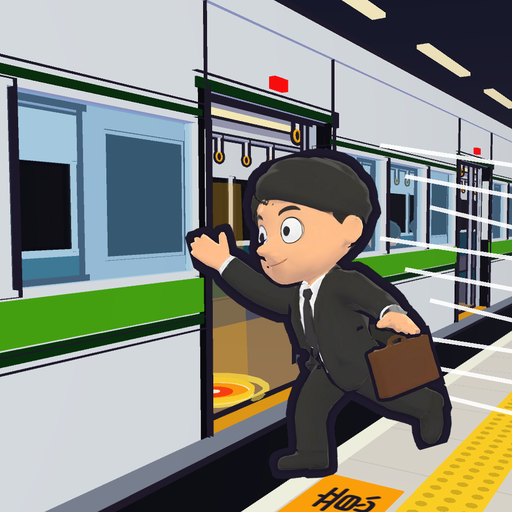
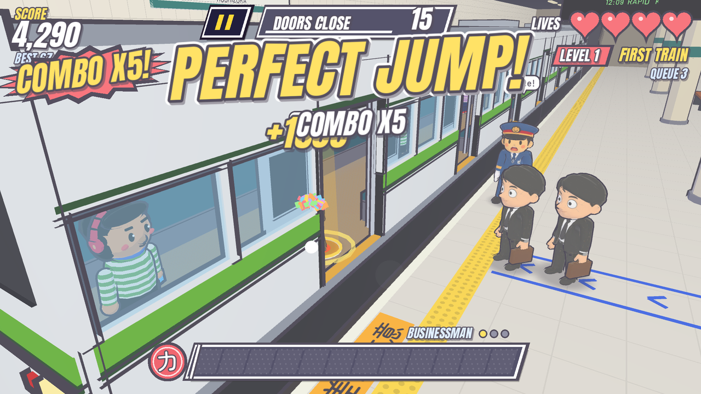
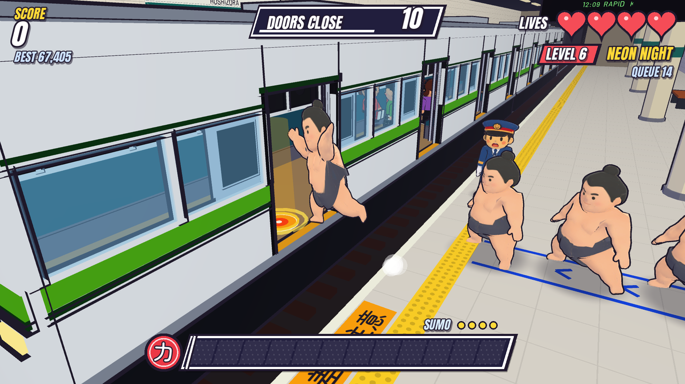
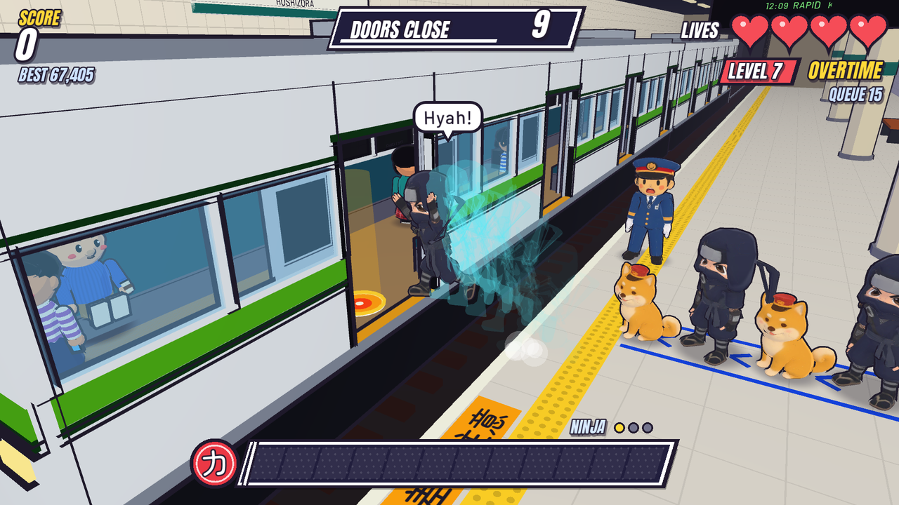
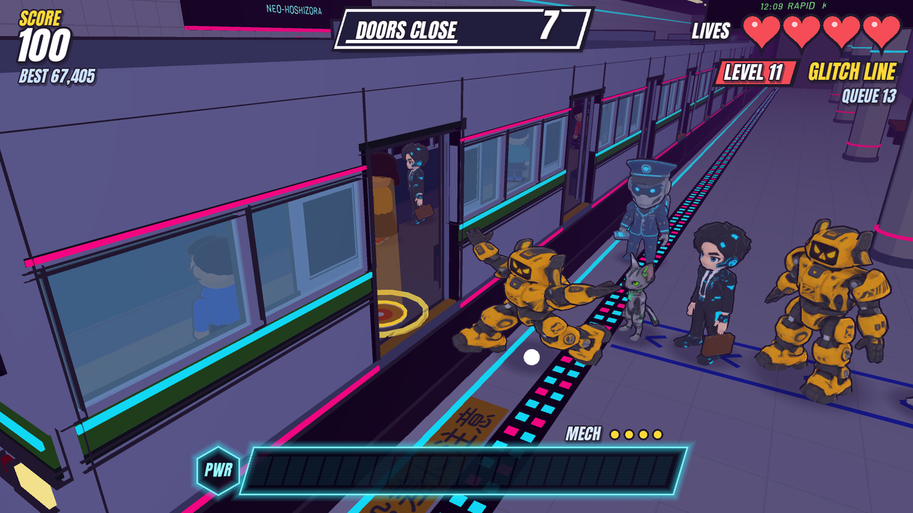

Platform Jumper · hold, release, leap!
Mind the gap! The metro is in, the doors are open and a queue of passengers is waiting. Hold your finger to charge the power meter, let go — and leap over the gap into the carriage before the doors close.
Get it on Google PlayFree · Android




The whole game is free. Ads appear between stations — a banner on the station summary and a full-screen ad every 3 stations, never during a jump. Optional rewarded ads give you +1 life or a ride in NEO-METRO.
One small purchase, the Full Version, removes all ads, gives you 4 hearts instead of 3 and lets you choose NEO-METRO anytime. One payment, no subscription.
No account and no chat; plays offline. Languages: English, Polish, German, Czech, French, Spanish, Portuguese, Italian and Japanese.